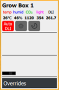

Dashboard > Zones
RAYN Syrcadia systems are subdivided into one or more zones, each of which can control their own crop and day plans, DLI settings, and other controls. All fixtures and devices in your system must be assigned to a zone in order to be controlled.
This area displays the summary status display for each defined zone controlled by RAYN Syrcadia. Each zone tile includes the zone name, current sensor feedback for temperature, humidity, and CO2. If enabled, the External Control toggle button is also found here (see Settings > Preferences > Special).
Note: RAYN Syrcadia on PC may be commissioned as Base or Unlocked, which determines how many zones can be controlled and whether or not the Dashboard is used.

Select the zone tile to open the configuration tabs for that zone. Opening a zone from the dashboard will open to the most recently used zone tab.
In the middle section of the tile, the system will display information about the current crop and day plans. Beneath that, information about the state of the system is displayed, including if the spectrum has been manually set, is the result of a planned event or an override. Status for individual devices in the spectrum is also displayed here in the preview icons at the bottom of the display region.
If the system has been interrupted by a manual or override state, the area above the layout mimic will change color and a play button will appear next to the crop/day plan information. A notification that the Scheduler has been interrupted is also shown in the title bar of the screen. Select the play button to return the system to the automated plan.
Auto DLI
The daily light integral (DLI) of an area measures the amount of photosynthetically-active light it receives over a 24-hour period of time.
Zone tiles display the current DLI value and controls for the Auto DLI feature. Auto DLI controls are available when there is a light sensor connected to a zone. Auto DLI cannot extend the photoperiod beyond midnight. Take care when using auto DLI with time period extension if growing short-day plants which are sensitive to the day length. Auto DLI brightness control provides the most adjustability when spectra are recorded with less-than-100% intensity.
Zone Control and Indicators
Zone control buttons include:
- Auto DLI – select this button to turn on the Auto DLI controls (when enabled, the button turns red). Auto DLI can be managed by the system by adjusting the overall intensity of the spectrum, or by extending the photoperiod, or both.
- Light button – appears when Auto DLI is enabled. Select this to have RAYN Touch maintain the DLI using overall intensity of the lighting (when enabled, the button turns pink).
- Clock button – appears when Auto DLI is enabled. Select this to have RAYN Syrcadia maintain the DLI using an adjustment of the length of the photoperiod (when enabled, the button turns pink).
- Play button – appears when the spectrum is manually created or the result of activating an override state. Select this button to return to the day plan.
- Resume all - appears when one or more spectra are in a manual or override state. Select this button to return all zones to their day plans.
- Overrides – accesses override states for the system. The override indicators above the button are color-coded based on the data the zone is outputting.
- External Control – appears when the External Control option is enabled in Settings > Preferences > Special. Select this button to suppress control of this zone from RAYN Syrcadia so that an external controller may have control of those devices.
The following indicators are always visible in the bottom left of the toolbar:
- Radio - whether an EnOcean dongle is connected to the RAYN system. A compatible radio device must have been added to the configuration in order for this indicator to appear.
- MQTT - whether or not there is an active MQTT broker (see Settings > Preferences > Network).
- Output - whether or not RAYN Syrcadia on PC is detecting an output dongle.